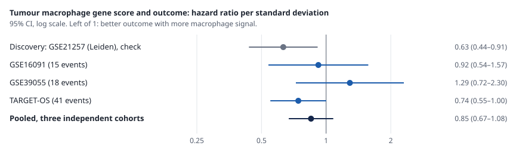

Report · Updated November 26, 2026 · 3 min read
Engine Cycle 14: Does More Macrophage Signal in the Tumour Go with a Better Outcome, in Patients Outside the Study That Found It?
Run November 26, 2026. The fourteenth cycle of the For John research engine. Pre-registration: research_notes/Engine/cycle-14-macrophages/PREREGISTRATION.md, committed at commit d79cc23 before any of these genes was read from these cohorts. Script: tools/engine_cycle14_macrophages.py. Results: data/engine/cycle14/results.csv. Nothing here is about any patient's treatment.
Summary
A 2011 Leiden study reported that osteosarcomas with more macrophages, a type of immune cell, had fewer metastases (paper, abstract; Buddingh et al., Clinical Cancer Research 2011). That is part of the rationale for immune-stimulating treatment such as mifamurtide. We tested a macrophage gene score (CD163, CD14, CD68) in three cohorts that played no part in that finding: 155 patients and 74 events.
- The original result reproduces in its own data. In the Leiden cohort (GSE21257), more macrophage signal went with longer metastasis-free survival: hazard ratio 0.63 per standard deviation (0.44–0.91). This shows the gene score captures what the study saw.
- In new patients it is weaker and not clear. Pooled across the three independent cohorts, the hazard ratio was 0.85 (0.67–1.08). The pre-registered verdict is inconclusive.
- TARGET-OS leaned the same way (0.74, 0.55–1.00).
- GSE16091 was near no effect (0.92), and GSE39055 leaned the other way (1.29).
- T-cell score (secondary): also inconclusive, 0.82 (0.63–1.06).
- Predictions: P41 (the reproduction) was right; P42 (independent support) was wrong.
This repeats the lesson of cycle 1: a clear result in one cohort often shrinks in new patients. The macrophage link is not ruled out; a protective effect of about 0.77 per standard deviation is still possible. But it is not confirmed in independent RNA data.
How to read the labels. Every number here is (our calculation) from open data unless marked otherwise.
What Was Tested
- Score: the mean of the within-cohort z-scores of CD163, CD14 and CD68 RNA, from whole tumour pieces.
- Cohorts, end points and probe rules: those of engine cycle 1.
- GSE21257: metastasis-free survival in patients without metastasis at diagnosis.
- GSE16091: overall survival.
- GSE39055: recurrence-free survival.
- TARGET-OS: event-free survival, adjusted for metastasis at diagnosis.
- Effect: hazard ratio per standard deviation, pooled across the three independent cohorts (fixed effect). Below 1 means a better outcome with more macrophage signal.
- Verdict rules, fixed in advance:
- Supported: the whole 95% interval is below 1.
- Refuted: the lower end is above 0.77.
- Inconclusive: anything else.
Results

| Cohort | Patients (events) | Macrophage score | T-cell score (CD3E, CD8A) | CD163 alone |
|---|---|---|---|---|
| GSE21257, Leiden (where the finding came from) | 39 (20) | 0.63 (0.44–0.91) | 0.58 (0.33–1.02) | 0.59 (0.42–0.84) |
| GSE16091 | 34 (15) | 0.92 (0.54–1.57) | 1.07 (0.65–1.73) | 0.84 (0.49–1.45) |
| GSE39055 | 37 (18) | 1.29 (0.72–2.30) | 0.97 (0.61–1.54) | 0.92 (0.56–1.54) |
| TARGET-OS | 84 (41) | 0.74 (0.55–1.00) | 0.60 (0.40–0.89) | 0.69 (0.50–0.95) |
| Pooled, three independent cohorts | 155 (74) | 0.85 (0.67–1.08) | 0.82 (0.63–1.06) | 0.77 (0.60–0.98) |
- Heterogeneity: I² = 30% for the macrophage score. Random effects: 0.89 (0.65–1.21).
- Without TARGET-OS (the two GEO cohorts only): 1.08 (0.73–1.59).
- In the Leiden cohort, overall survival adjusted for metastasis at diagnosis (all 53 patients): 0.96 (0.65–1.41). The reproduction holds for metastasis, the end point the original study used, but not clearly for death.
- CD163 alone pooled to 0.77 (0.60–0.98). This is a secondary analysis, one of five single genes, with no correction for multiple tests.
- TARGET-OS showed the clearest signals, for both macrophage and T-cell genes. It is also the largest cohort and the only one measured by RNA sequencing.
What This Means
- Not confirmed, not ruled out. Independent patients show at most a weaker version of the Leiden result. Two of the three cohorts show little or none of it.
- CD163 and TARGET-OS are the threads to follow. CD163 marks one kind of macrophage, and the original study reported it alongside CD14 (paper, abstract). A test of CD163 staining in a new set of tumours would be the clean next step.
- What this does not say:
- It says nothing about whether mifamurtide or any other treatment works. That question belongs to trials, and a randomized trial of mifamurtide is under way (
reports/Osteosarcoma research landscape and gaps.md). - RNA from whole tumour pieces is a rough stand-in for counting cells on a stained section.
- It says nothing about whether mifamurtide or any other treatment works. That question belongs to trials, and a randomized trial of mifamurtide is under way (
Limits
- 74 events across three small or mid-sized cohorts, with different platforms and end points.
- Bulk RNA only; immune genes are also expressed by other cell types.
- Several genes and two scores were examined. Only the macrophage score was the main test.
Files and Reproduction
- Run the downloads of engine cycle 1 and the TARGET-OS stage of
tools/survival_analysis.pyfirst. - Then
python3 tools/engine_cycle14_macrophages.pyruns the analysis. - Outputs:
data/engine/cycle14/results.csv,data/engine/cycle14/summary.jsonanddocs/figures/engine14_macrophages.svg.

Data sources and credit.
- NCBI GEO: GSE21257 (Leiden University Medical Center), GSE16091 and GSE39055.
- TARGET-OS: NCI TARGET, via the Genomic Data Commons.
Change Log
- 2026-11-26: cycle run and reported. Verdict: inconclusive (H1 and H2). P41 right, P42 wrong. No deviations.
Source file: reports/Engine cycle 14 - does tumour macrophage signal predict a better outcome in new patients.md. Corrections welcome as a GitHub issue. Not medical advice.